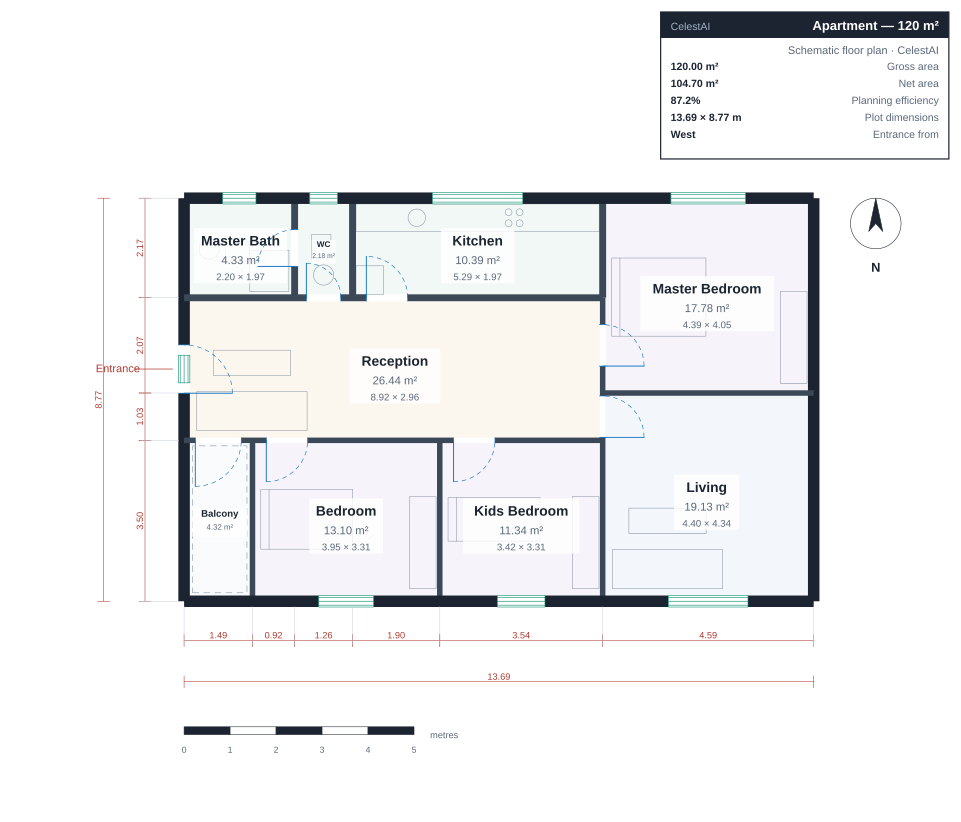

Featured project Architecture × AI
CelestAI
From a design brief
to a dimensioned floor plan.
A bilingual architectural design tool that combines AI with a deterministic geometry engine to turn natural-language briefs into dimensioned floor plans, with automated checks and CAD exports.
- Natural-language design briefs
- Automated geometric checks
- SVG, PDF & DXF exports
